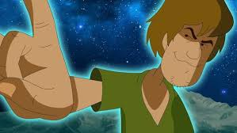

Why Shaggy is worth it
Shaggy is a God, and a well good Chad as shown in the picture bellow, wouldn't you want to be a part in His perfect plan to? Take a good long look, don't you want His buff chest, and ripped mustles to have your back, and your soul? I know it seems scarry, but take heart as you shall transend with him unto His glourious final form, and endure forever.

Shaggy has placed First in over 400,000 eating competitions, 1,300 Olympic Gold Metals, and 15 best selling autobiographies. Shaggy's track record is so ginormous in fact that it is said that He has never lost a single challenge ever presented to Him, even to not eat all of the dessert.
